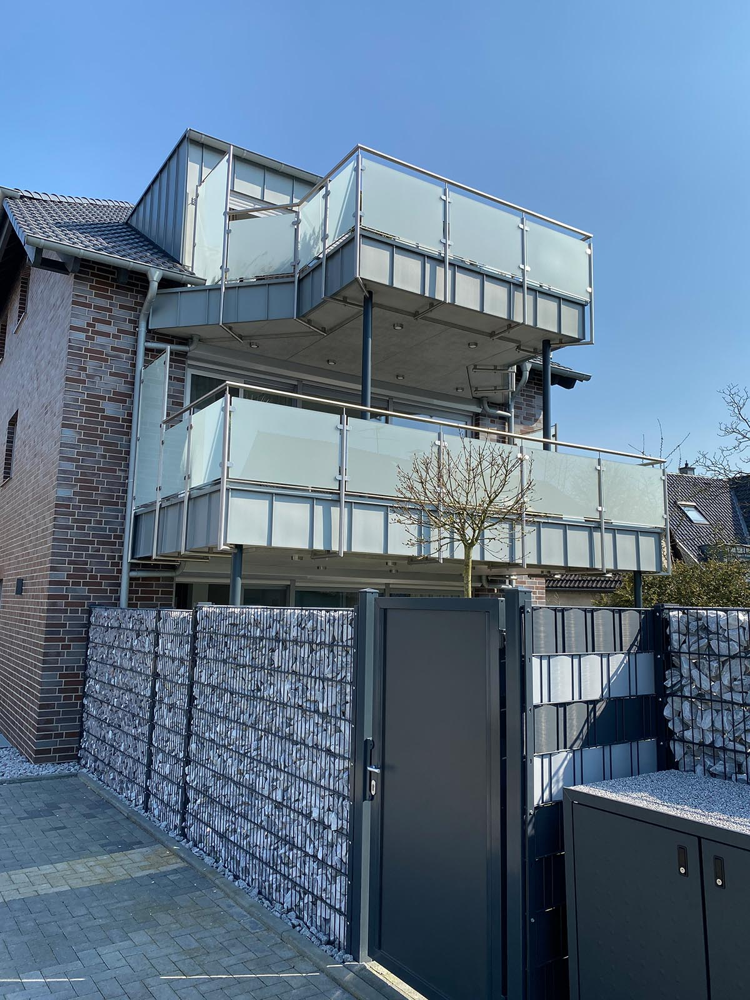
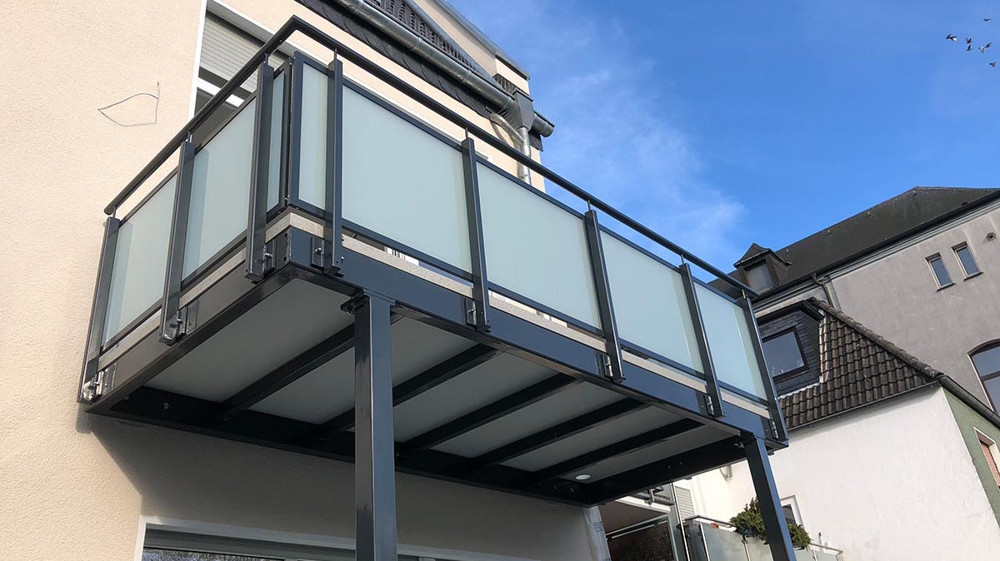
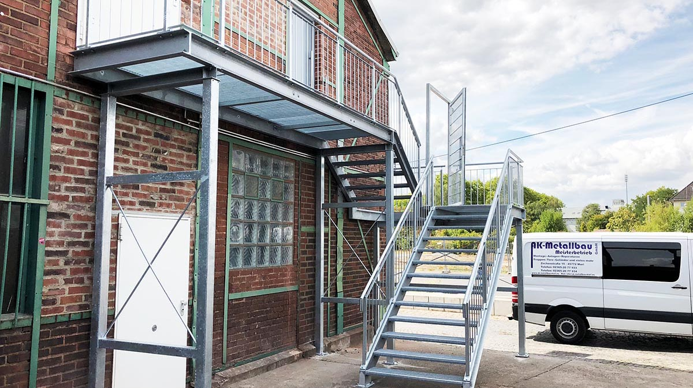
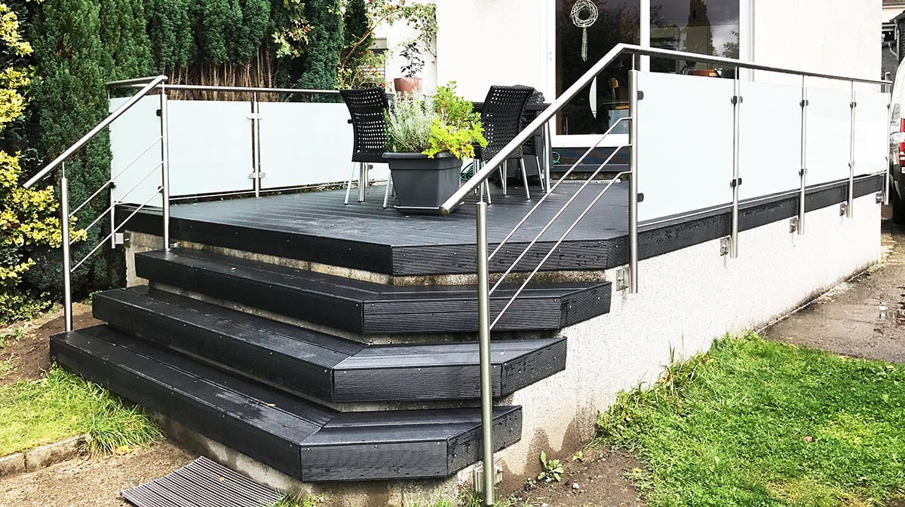
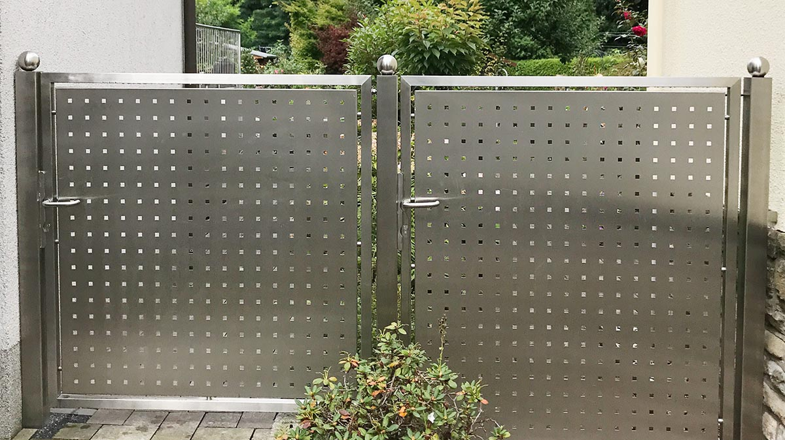
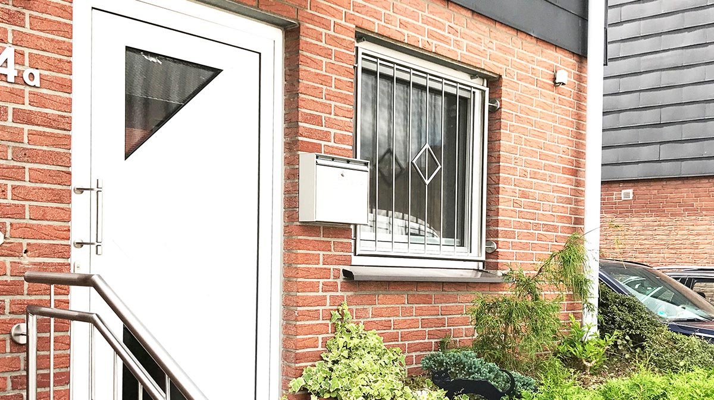
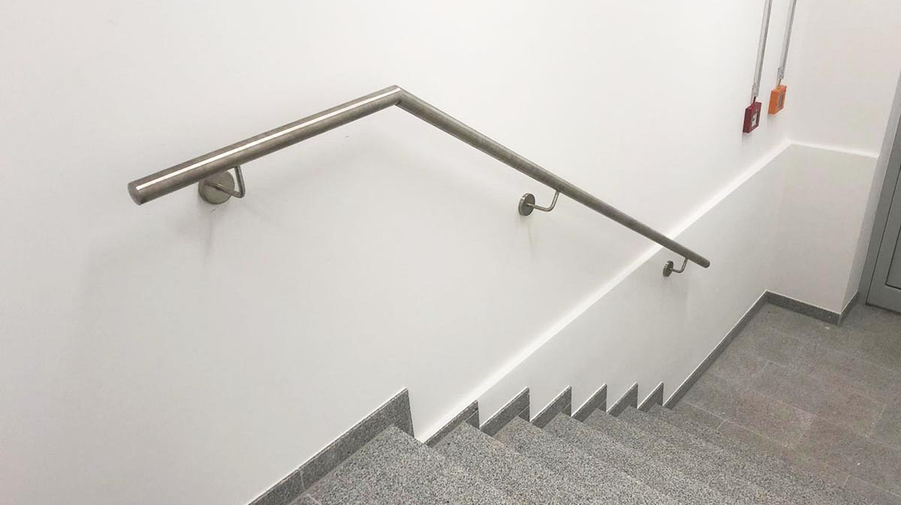
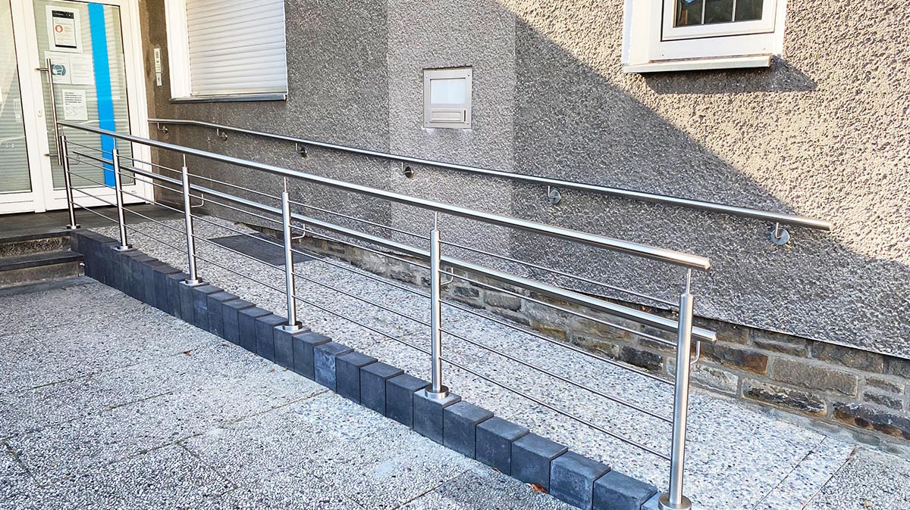
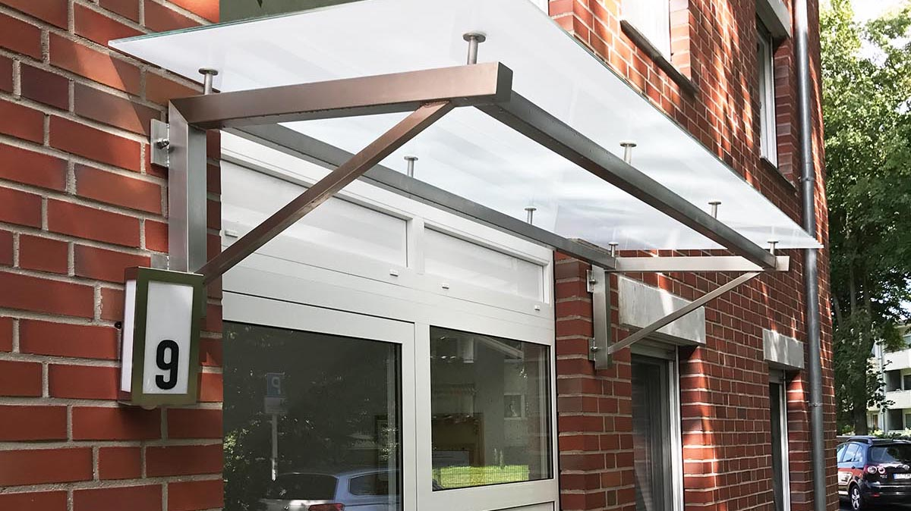

01Balkone
Individuell in Größe, Form und Material an das Bauwerk angepasst.
für Wohnungsbau und private ObjekteStahl, Edelstahl und Montage aus einer Hand
AK-Metall & Stahlbau GmbH in Marl arbeitet für Architektenbüros, Wohnungsbaugesellschaften, Industriebetriebe und Privatkunden. Schwerpunkt sind Balkone, Geländer, Treppen, Tore, Rampen, Überdachungen und Schweißarbeiten in Stahl und Edelstahl.

EinsatzbereicheJede Konstruktion wird an Bauwerk, Nutzung und gewünschte Optik angepasst. Dazu gehören Fertigung, Montage und eine termingerechte Auftragsabwicklung.
Qualität, Zuverlässigkeit und vollständig bestückte Fahrzeuge für saubere Montagen vor Ort.
funktional, tragfähig, hochwertig
Saubere Abstimmung bei individuellen Vorgaben, Maßen und Konstruktionen.
Robuste Lösungen für Balkone, Geländer und Treppen mit klarer Montageplanung.
Funktionale Stahlbau- und Schweißarbeiten mit Blick auf Belastbarkeit und Sicherheit.
Individuelle Ausführungen, die Fassade, Zugang und Nutzung sichtbar aufwerten.
Premium Eindruck
Sie kann gleichzeitig präzise, industriell und hochwertig wirken. Genau darauf ist diese Version ausgelegt: echte Bilder, klare Materialien, starke Flächen und ein Aufbau, der Kompetenz visuell transportiert.



Produkte
Die bestehende Website zeigt bereits die Produktvielfalt. Diese Website ordnet sie so, dass Besucher schneller verstehen, was AK-Metall & Stahlbau konkret plant, fertigt und montiert.

01Individuell in Größe, Form und Material an das Bauwerk angepasst.
für Wohnungsbau und private ObjekteSicherheitsrelevante Lösungen mit sauberer Haptik und klarer Gestaltung.
präzise gefertigt und stark in der WirkungVon Spindeltreppe bis Außentreppe für private und gewerbliche Anwendungen.
funktional und architektonisch präsentRobust, dekorativ und auf Wunsch mit zusätzlichem Einbruchschutz.
robuste Lösungen für Zugang und Schutz
05Wirksamer Schutz, der funktional ist und die Fassade optisch aufwertet.
Sicherheit ohne gestalterischen Verlust
06Mehr Sicherheit an Treppenläufen mit sauberer Wandanbindung.
klare Führung und saubere Details
07Individuell angepasst für Anlieferung, Kinderwagen, Rollstühle und mehr.
maßgeschneidert für reale Nutzung
08Komfort und Witterungsschutz für Haus- und Nebeneingänge.
praktisch, wertig und langlebigWarum AK-Metall & Stahlbau
Die Website macht klar, dass AK nicht nur plant, sondern Konstruktionen auch fertigt und montiert.
Werkstoffe, Einsatzbereiche und individuelle Ausführung werden verständlich statt nur aufgezählt dargestellt.
Qualität, Zuverlässigkeit und termingerechte Auftragsabwicklung werden als echte Vertrauenssignale sichtbar.
Material und Verarbeitung
für tragfähige, robuste und funktionale Konstruktionen
für präzise, wertige und dauerhaft gepflegte Oberflächen
für saubere Verbindungen und professionelle Ausführung im Detail
Für wen AK arbeitet
Individuelle Metallkonstruktionen nach Vorgabe, mit klarer Umsetzbarkeit und sauberer Abstimmung.
Lösungen für Balkone, Geländer, Treppen und Außenbereiche mit Fokus auf Haltbarkeit und Montage.
Vom funktionalen Stahlbau bis zur optisch anspruchsvollen Ausführung in Edelstahl.
Ablauf
Sie senden die wichtigsten Eckdaten, den Einsatzbereich und wenn möglich Maße oder Fotos.
AK klärt Anforderungen, Werkstoffe, Nutzung und passende Ausführung für das jeweilige Bauvorhaben.
Konstruktionen werden passend zum Objekt in Stahl oder Edelstahl vorbereitet und gefertigt.
Vor Ort erfolgt die saubere Montage mit vollständig bestückten Fahrzeugen und klarer Terminplanung.
FAQ
Balkone, Fenstergitter, Geländer, Handläufe, Rampen, Tore, Treppen und Überdachungen sowie Schweißarbeiten in Stahl und Edelstahl.
Nein. Zum Kundenstamm gehören Architektenbüros, Wohnungsbaugesellschaften, Industriebetriebe und Privatkunden.
Ja. Laut bestehender Unternehmensdarstellung werden Konstruktionen an Größe, Form, Design und Bauwerk angepasst und auch nach Vorgabe gefertigt.
Am schnellsten per Telefon, E-Mail oder über das Kontaktformular mit den wichtigsten Eckdaten zum Projekt.
Kontakt
Senden Sie eine Anfrage mit Ihrem Vorhaben. Besonders hilfreich sind Angaben zu Einsatzbereich, gewünschtem Produkt und falls vorhanden Maße oder Fotos.